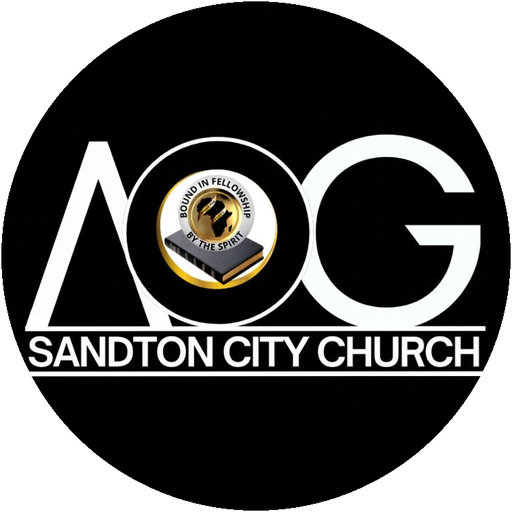

You are part of a story that began with a prayer meeting in Los Angeles more than a century ago, travelled to South Africa, and now lives on in Sandton. This pack tells that story, who we are, and what we're not.
Welcome pack
AOG Sandton City Church · 17 Humber Street, Woodmead, Sandton · aogsccyouth.com
Our roots · 1906 to today
A revival led by William J. Seymour begins at 312 Azusa Street. People of every race pray together and are filled with the Holy Spirit. Within two years the message reaches more than fifty nations.
Charles Chawner (Canada), Henry and Anna Turney and Hannah James (England) begin ministry in Zululand and around Pretoria. This is the start of the Assemblies of God in South Africa.
Pentecostal believers meet in Hot Springs, Arkansas (USA) and form the Assemblies of God. In 1917 the South African work joins, and the name is registered in Pretoria.
Nicholas Bhengu, born in 1909 at Entumeni near Eshowe, gives his life to Christ in Kimberley through two travelling evangelists.
After ministering with the Emmanuel Mission in Nelspruit, Bhengu and his companions join the Assemblies of God. His ministry grows from Benoni.
A crusade in Port Elizabeth sees about a thousand people saved in a few weeks. Bhengu calls the message "Back to God", and it spreads to East London and city after city.
The Back to God Crusade plants churches across Southern Africa. In 1959 TIME magazine calls Bhengu "the black Billy Graham".
The churches born from his ministry become the Assemblies of God Movement, today known as the Assemblies of God Back to God. Bhengu went to be with the Lord in 1985.
Our founding father
Nicholas Bhekinkosi Hepworth Bhengu (1909–1985) is the father of the Back to God movement and the founder through whose ministry the Assemblies of God took root in townships and cities across South Africa.
He preached Jesus Christ with simple, fearless faith. Thousands were saved and healed, and many turned away from crime as their lives were changed.
He taught holiness and the fear of God, and he called believers to dignity, honest work and self-reliance, so that local churches could stand on their own feet and support their own pastors and buildings.
What we carry from him
The gospel first. Every town, city and nation needs to hear about Jesus.
Holiness. A changed heart shows in a changed life, at home, at work and in the community.
Dignity and self-reliance. We give, work and build together, so the church can bless others.
Prayer and the power of the Holy Spirit. We expect God to save, heal and deliver today.
Unity. Like Azusa Street, the church is a family where every language and background belongs.
Clearing things up
We follow Jesus Christ, not a personality. Pastors and leaders serve the church, and they are accountable to God, to the Bible and to each other.
We are part of the worldwide Pentecostal family that grew from Azusa Street. What we believe is open, written down and taken from the Bible.
"Back to God" began as the name of Nicholas Bhengu's crusades. It was a message, a call to return to God, and it still is.
We pray for our nation and serve our communities, but our mission is the gospel of Jesus Christ for everyone, whoever they vote for.
No one is saved by joining a church or doing enough good. We are saved by God's grace, through faith in Jesus (Ephesians 2:8–9).
Church is a hospital for the broken and a home for the searching. Come as you are; God does the changing.
Our church
AOG Sandton City Church was born from a vision: a city church in the heart of Sandton, where people who live, study and work in the city can find Jesus, grow in faith and be sent out to serve.
Today we meet at 17 Humber Street, Woodmead, with services through the week and a youth ministry that is close to our hearts.
The full story of how we began is being written down and will be added here soon.
In short
The Bible is God's Word, our guide for faith and life.
Jesus Christ died and rose again; everyone who believes in Him is saved by grace.
Water baptism by immersion, and baptism in the Holy Spirit, for every believer.
Holiness: a life that honours God.
Holy Communion, remembering the Lord's death until He comes.
Divine healing and deliverance through the power of God.
The Great Commission: go and make disciples of all nations (Matthew 28:19).
The church is a family. We gather, pray, give and serve together.
Become a member at aogsccyouth.com/join. A leader will walk with you.
Read today's verse in your profile and pray with the church every day.
Find a ministry: worship, media, youth, children, hospitality and more.